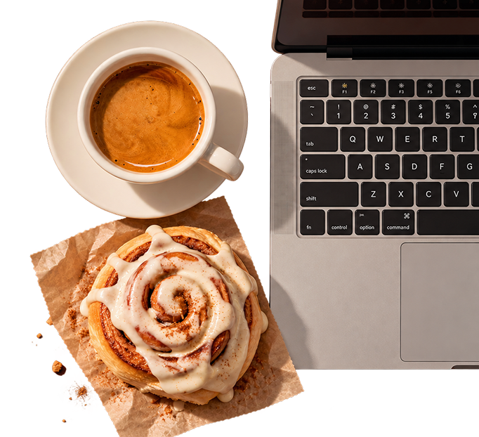
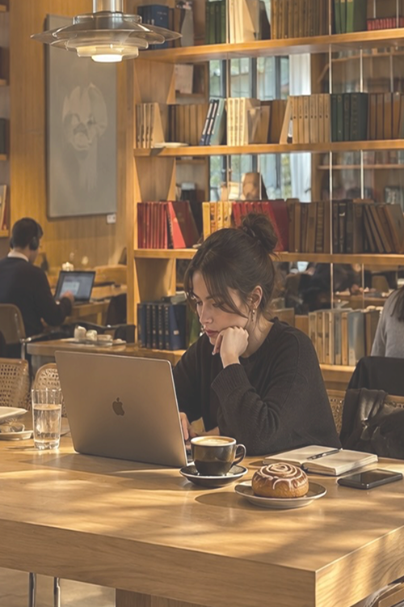

01. WIFI
Conexión para trabajar, estudiar o tener una reunión.

ritual cumple con tu necesidad.
Conexión para trabajar, estudiar o tener una reunión.
Enchufes cerca para que tu día no dependa de la batería.
Mesas cómodas y un ambiente pensado para quedarte.
A tu ritmo.
Hay días para trabajar desde casa y otros para cambiar de aire. ritual Work nace como un espacio donde podés abrir la compu, pedir un café y hacer tuyo el lugar por un rato.
